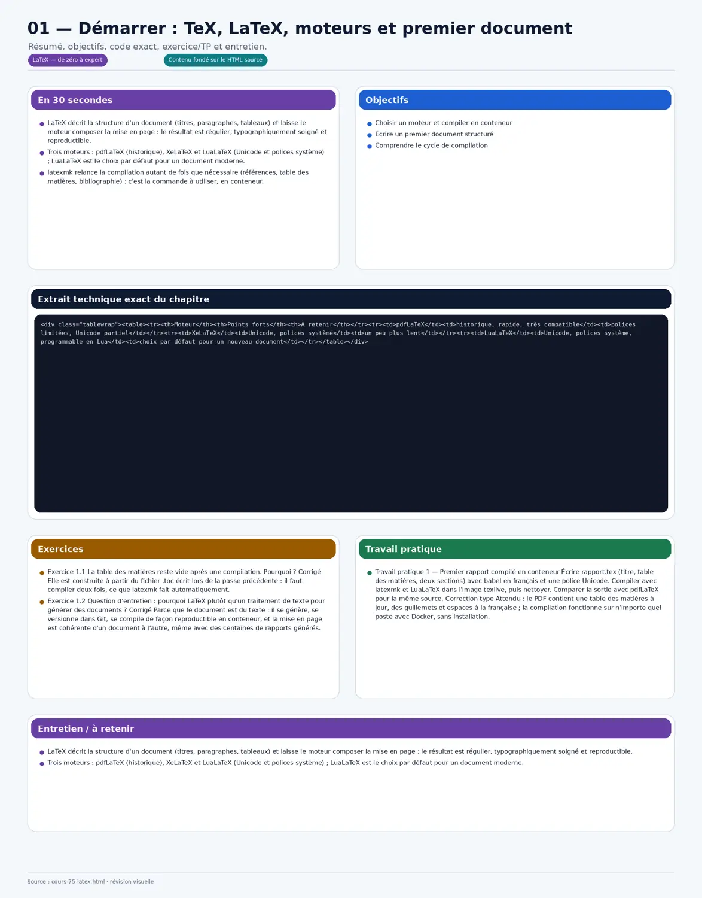
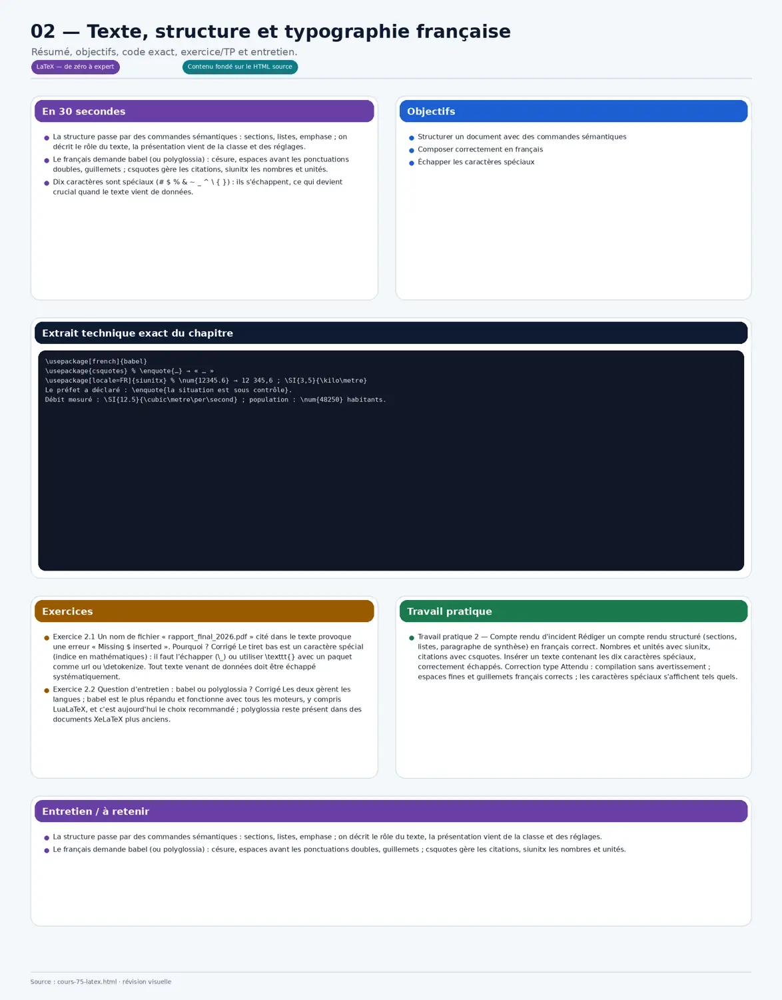
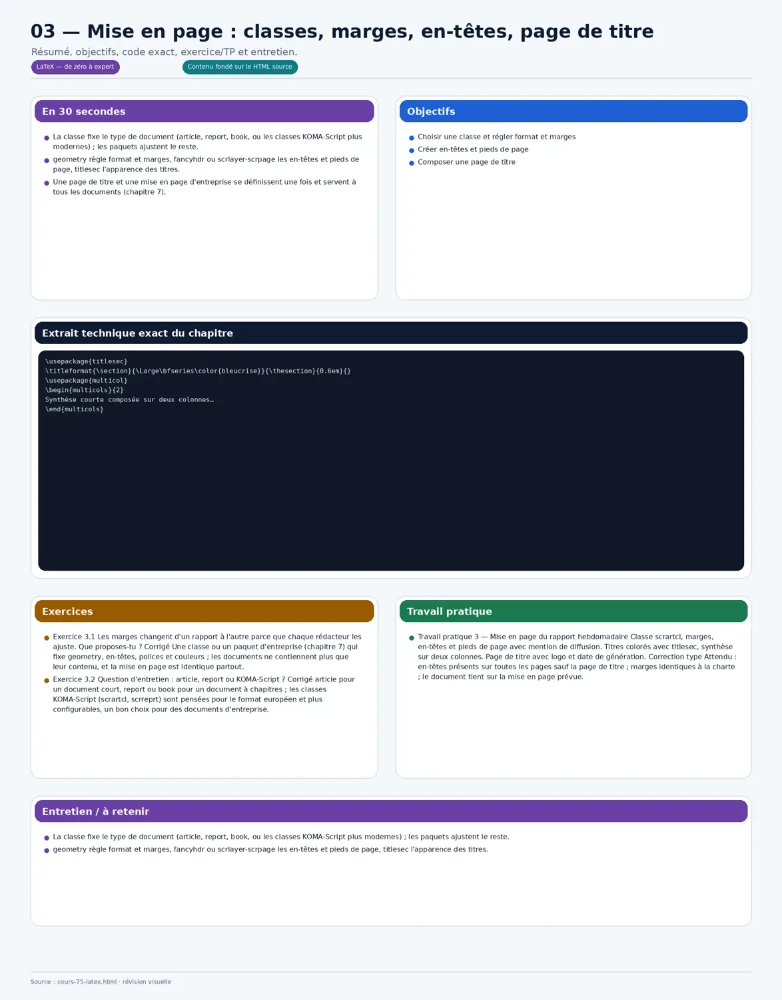
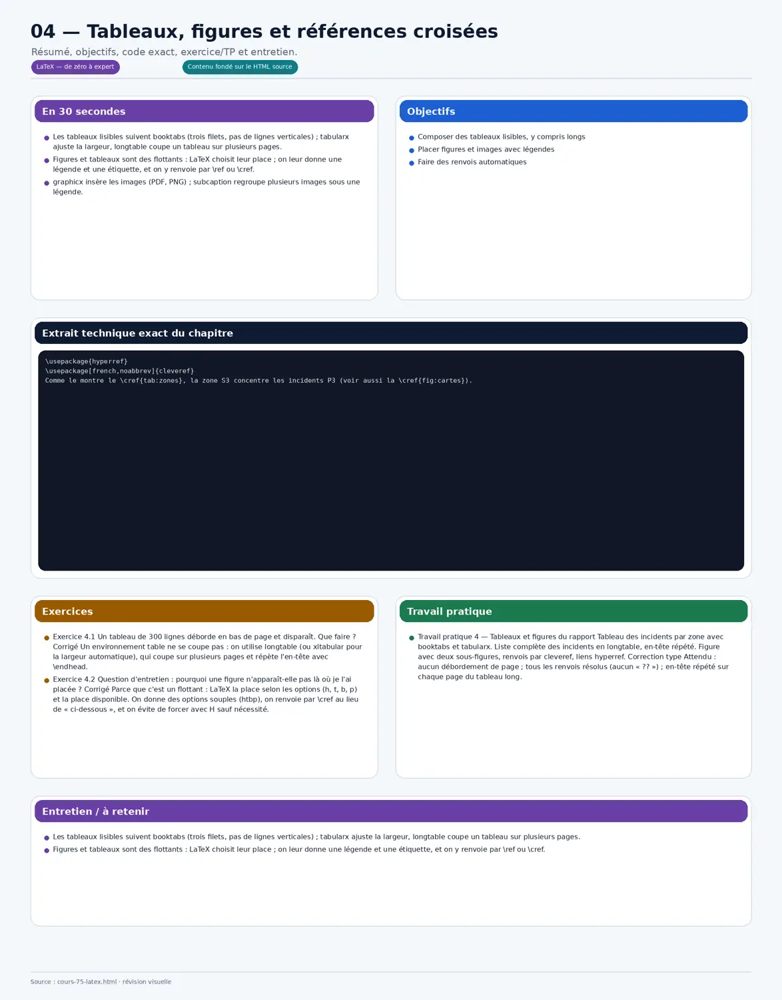
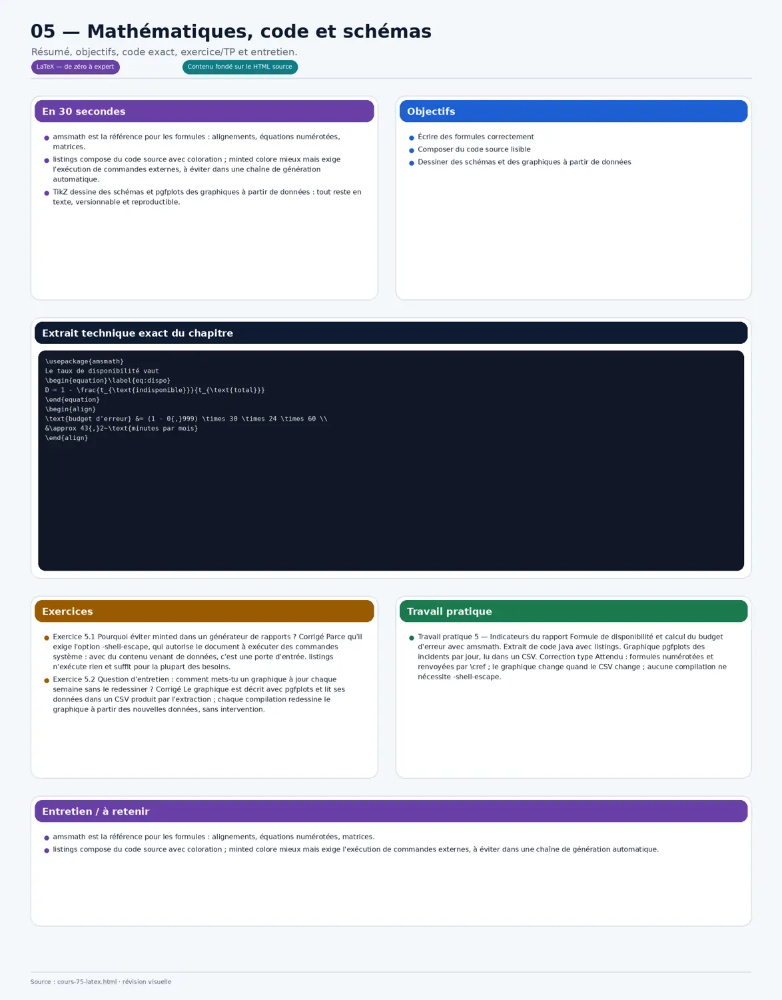
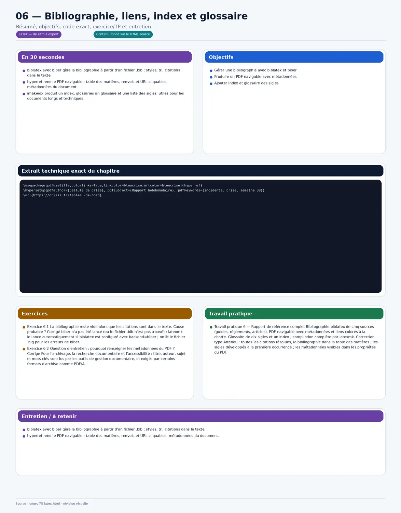
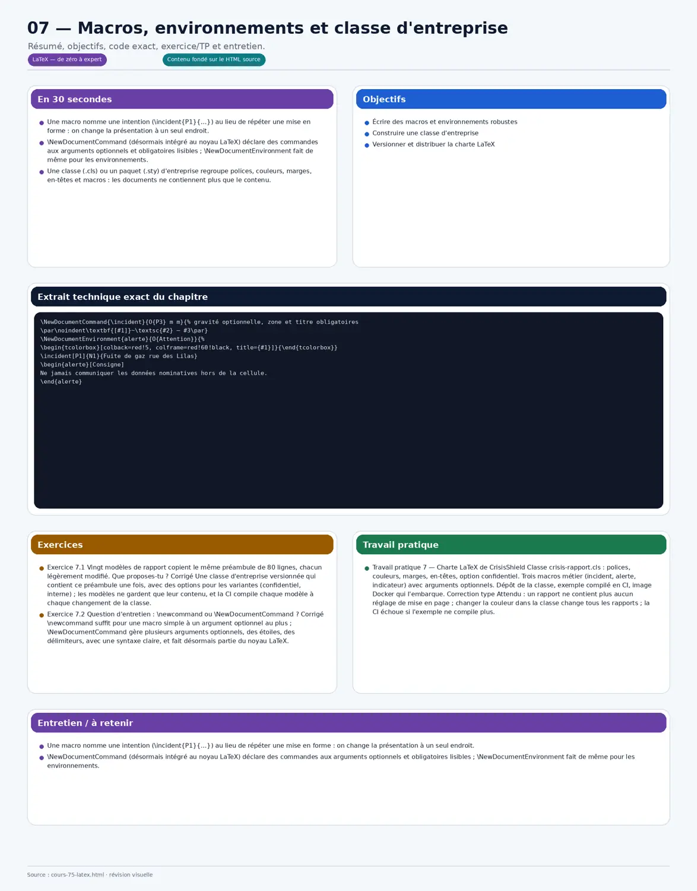
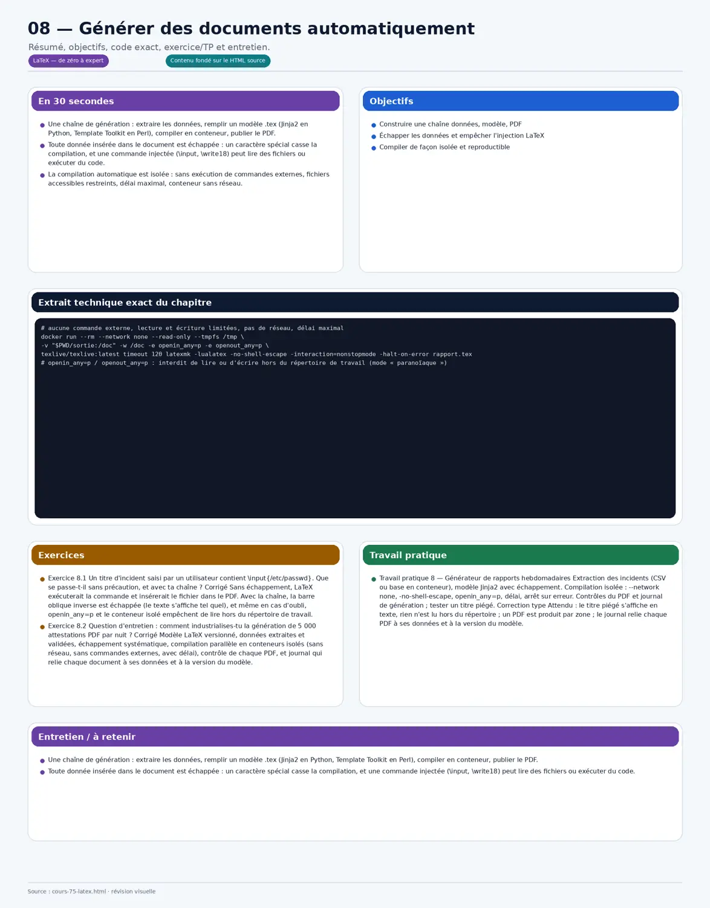

Neuf chapitres pour composer et générer des documents avec LaTeX : moteurs et compilation en conteneur, structure et typographie française, mise en page et page de titre, tableaux, figures et renvois, formules, code et graphiques (TikZ, pgfplots), bibliographie, index et glossaire, macros et classe d'entreprise, génération automatique depuis des données (Jinja2, échappement, compilation isolée contre l'injection), diagnostic, PDF reproductibles et archivables (PDF/A). Tout tourne en conteneur ; chaque chapitre a ses exercices corrigés et un travail pratique avec correction type.
≈ 30 h de travail · prérequis : aucun ; utile avec les cours Perl et Python pour la génération.
Démarrer : TeX, LaTeX, moteurs et premier document
En 30 secondes
LaTeX décrit la structure d'un document (titres, paragraphes, tableaux) et laisse le moteur composer la mise en page : le résultat est régulier, typographiquement soigné et reproductible.
Trois moteurs : pdfLaTeX (historique), XeLaTeX et LuaLaTeX (Unicode et polices système) ; LuaLaTeX est le choix par défaut pour un document moderne.
latexmk relance la compilation autant de fois que nécessaire (références, table des matières, bibliographie) : c'est la commande à utiliser, en conteneur.
Une distribution installée à la main diffère d'un poste à l'autre : l'image TeX Live épinglée compile partout de la même façon.
À la fin de ce chapitre, tu sauras
Choisir un moteur et compiler en conteneur
Écrire un premier document structuré
Comprendre le cycle de compilation
Un premier document
Tout en conteneur : alias latexmk='docker run --rm -v "$PWD:/doc" -w /doc texlive/texlive:latest latexmk' ; aucune distribution TeX installée sur le poste.
% rapport.tex
\documentclass[11pt,a4paper]{article}
\usepackage[french]{babel} % césure, guillemets, espaces fines à la française
\usepackage{fontspec} % polices Unicode (LuaLaTeX ou XeLaTeX)
\setmainfont{TeX Gyre Pagella}
\title{Rapport d'incidents de la semaine}
\author{Cellule de crise}
\date{\today}
\begin{document}
\maketitle
\tableofcontents
\section{Synthèse}
Cette semaine, \textbf{42 incidents} ont été déclarés, dont 3 de gravité P1.
\section{Détail par zone}
\end{document}
% docker run --rm -v "$PWD:/doc" -w /doc texlive/texlive:latest latexmk -lualatex rapport.tex
Les moteurs
Moteur
Points forts
À retenir
pdfLaTeX
historique, rapide, très compatible
polices limitées, Unicode partiel
XeLaTeX
Unicode, polices système
un peu plus lent
LuaLaTeX
Unicode, polices système, programmable en Lua
choix par défaut pour un nouveau document
Le cycle de compilation
Une première passe écrit les références dans des fichiers auxiliaires (.aux, .toc) ; une seconde les utilise ; la bibliographie ajoute un passage par biber. latexmk détecte ce qui a changé et enchaîne les passes ; latexmk -c nettoie les fichiers auxiliaires.

Fiche visuelle : Démarrer : TeX, LaTeX, moteurs et premier document
Exercice 1.1
La table des matières reste vide après une compilation. Pourquoi ?
Corrigé
Elle est construite à partir du fichier .toc écrit lors de la passe précédente : il faut compiler deux fois, ce que latexmk fait automatiquement.
Exercice 1.2
Question d'entretien : pourquoi LaTeX plutôt qu'un traitement de texte pour générer des documents ?
Corrigé
Parce que le document est du texte : il se génère, se versionne dans Git, se compile de façon reproductible en conteneur, et la mise en page est cohérente d'un document à l'autre, même avec des centaines de rapports générés.
Travail pratique 1 — Premier rapport compilé en conteneur
Écrire rapport.tex (titre, table des matières, deux sections) avec babel en français et une police Unicode.
Compiler avec latexmk et LuaLaTeX dans l'image texlive, puis nettoyer.
Comparer la sortie avec pdfLaTeX pour la même source.
Correction type
Attendu : le PDF contient une table des matières à jour, des guillemets et espaces à la française ; la compilation fonctionne sur n'importe quel poste avec Docker, sans installation.
Chapitre 2Débutant
Texte, structure et typographie française
En 30 secondes
La structure passe par des commandes sémantiques : sections, listes, emphase ; on décrit le rôle du texte, la présentation vient de la classe et des réglages.
Le français demande babel (ou polyglossia) : césure, espaces avant les ponctuations doubles, guillemets ; csquotes gère les citations, siunitx les nombres et unités.
Dix caractères sont spéciaux (# $ % & ~ _ ^ \ { }) : ils s'échappent, ce qui devient crucial quand le texte vient de données.
Dix caractères ont un sens pour LaTeX : on les échappe, et pour du texte généré, par une seule fonction appliquée à toutes les valeurs.
À la fin de ce chapitre, tu sauras
Structurer un document avec des commandes sémantiques
Composer correctement en français
Échapper les caractères spéciaux
Structure et listes
\section{Incidents majeurs}
\subsection{Zone N1}
\begin{itemize}
\item Fuite de gaz rue des Lilas : \emph{évacuation} de 40 personnes.
\item Inondation du sous-sol de la mairie.
\end{itemize}
\begin{enumerate}
\item Sécuriser le périmètre.
\item Prévenir les riverains.
\end{enumerate}
\paragraph{À retenir.} Deux incidents P1 sur trois concernent la zone N1.
Typographie française
babel en français place les espaces fines avant ; : ! ?, césure en français et libelle les éléments (« Table des matières », « Figure »). csquotes produit les bons guillemets, siunitx espace correctement nombres et unités.
\usepackage[french]{babel}
\usepackage{csquotes} % \enquote{…} → « … »
\usepackage[locale=FR]{siunitx} % \num{12345.6} → 12 345,6 ; \SI{3,5}{\kilo\metre}
Le préfet a déclaré : \enquote{la situation est sous contrôle}.
Débit mesuré : \SI{12.5}{\cubic\metre\per\second} ; population : \num{48250} habitants.
Les caractères spéciaux
Caractère
À écrire
Rôle en LaTeX
#
\#
paramètre de macro
$
\$
mode mathématique
%
\%
commentaire
&
\&
séparateur de colonne
_
\_
indice en mathématiques
^
\textasciicircum{}
exposant
~
\textasciitilde{}
espace insécable
\
\textbackslash{}
début de commande
{ }
\{ \}
groupe

Fiche visuelle : Texte, structure et typographie française
Exercice 2.1
Un nom de fichier « rapport_final_2026.pdf » cité dans le texte provoque une erreur « Missing $ inserted ». Pourquoi ?
Corrigé
Le tiret bas est un caractère spécial (indice en mathématiques) : il faut l'échapper (\_) ou utiliser \texttt{} avec un paquet comme url ou \detokenize. Tout texte venant de données doit être échappé systématiquement.
Exercice 2.2
Question d'entretien : babel ou polyglossia ?
Corrigé
Les deux gèrent les langues ; babel est le plus répandu et fonctionne avec tous les moteurs, y compris LuaLaTeX, et c'est aujourd'hui le choix recommandé ; polyglossia reste présent dans des documents XeLaTeX plus anciens.
Travail pratique 2 — Compte rendu d'incident
Rédiger un compte rendu structuré (sections, listes, paragraphe de synthèse) en français correct.
Nombres et unités avec siunitx, citations avec csquotes.
Insérer un texte contenant les dix caractères spéciaux, correctement échappés.
Correction type
Attendu : compilation sans avertissement ; espaces fines et guillemets français corrects ; les caractères spéciaux s'affichent tels quels.
Chapitre 3Confirmé
Mise en page : classes, marges, en-têtes, page de titre
En 30 secondes
La classe fixe le type de document (article, report, book, ou les classes KOMA-Script plus modernes) ; les paquets ajustent le reste.
geometry règle format et marges, fancyhdr ou scrlayer-scrpage les en-têtes et pieds de page, titlesec l'apparence des titres.
Une page de titre et une mise en page d'entreprise se définissent une fois et servent à tous les documents (chapitre 7).
Des réglages répétés dans chaque document divergent : une classe d'entreprise fixe la mise en page, et les documents ne gardent que leur contenu.
À la fin de ce chapitre, tu sauras
Choisir une classe et régler format et marges
Créer en-têtes et pieds de page
Composer une page de titre
Format, marges, en-têtes
\documentclass[11pt,a4paper]{scrartcl} % KOMA-Script, adapté au format européen
\usepackage[margin=2.2cm,top=2.8cm]{geometry}
\usepackage{fancyhdr}
\pagestyle{fancy}
\fancyhf{}
\fancyhead[L]{CrisisShield — Rapport hebdomadaire}
\fancyhead[R]{\leftmark}
\fancyfoot[C]{Page \thepage}
\fancyfoot[R]{Diffusion restreinte}
\renewcommand{\headrulewidth}{0.4pt}
Titres et colonnes
titlesec modifie l'apparence des titres de section ; multicol compose une partie en plusieurs colonnes ; \newpage et \clearpage contrôlent les sauts de page.
\usepackage{titlesec}
\titleformat{\section}{\Large\bfseries\color{bleucrise}}{\thesection}{0.6em}{}
\usepackage{multicol}
\begin{multicols}{2}
Synthèse courte composée sur deux colonnes…
\end{multicols}
Une page de titre
\begin{titlepage}
\centering
\includegraphics[width=4cm]{logo-crisisshield}\par\vspace{2cm}
{\Huge\bfseries Rapport d'incidents\par}\vspace{0.5cm}
{\Large Semaine 39 — 2026\par}\vfill
{\large Cellule de crise — préfecture N1\par}
{\small Document généré automatiquement le \today\par}
\end{titlepage}

Fiche visuelle : Mise en page : classes, marges, en-têtes, page de titre
Exercice 3.1
Les marges changent d'un rapport à l'autre parce que chaque rédacteur les ajuste. Que proposes-tu ?
Corrigé
Une classe ou un paquet d'entreprise (chapitre 7) qui fixe geometry, en-têtes, polices et couleurs ; les documents ne contiennent plus que leur contenu, et la mise en page est identique partout.
Exercice 3.2
Question d'entretien : article, report ou KOMA-Script ?
Corrigé
article pour un document court, report ou book pour un document à chapitres ; les classes KOMA-Script (scrartcl, scrreprt) sont pensées pour le format européen et plus configurables, un bon choix pour des documents d'entreprise.
Travail pratique 3 — Mise en page du rapport hebdomadaire
Classe scrartcl, marges, en-têtes et pieds de page avec mention de diffusion.
Titres colorés avec titlesec, synthèse sur deux colonnes.
Page de titre avec logo et date de génération.
Correction type
Attendu : en-têtes présents sur toutes les pages sauf la page de titre ; marges identiques à la charte ; le document tient sur la mise en page prévue.
Chapitre 4Confirmé
Tableaux, figures et références croisées
En 30 secondes
Les tableaux lisibles suivent booktabs (trois filets, pas de lignes verticales) ; tabularx ajuste la largeur, longtable coupe un tableau sur plusieurs pages.
Figures et tableaux sont des flottants : LaTeX choisit leur place ; on leur donne une légende et une étiquette, et on y renvoie par \ref ou \cref.
graphicx insère les images (PDF, PNG) ; subcaption regroupe plusieurs images sous une légende.
Un tableau dans un flottant ne se coupe jamais : longtable le répartit sur plusieurs pages et répète l'en-tête.
À la fin de ce chapitre, tu sauras
Composer des tableaux lisibles, y compris longs
Placer figures et images avec légendes
Faire des renvois automatiques
Un tableau lisible
\usepackage{booktabs,tabularx,longtable}
\begin{table}[htbp]
\centering
\caption{Incidents par zone et par gravité}\label{tab:zones}
\begin{tabularx}{\linewidth}{X r r r}
\toprule
Zone & P1 & P2 & P3 \\
\midrule
N1 & 2 & 5 & 11 \\
S3 & 1 & 3 & 20 \\
\bottomrule
\end{tabularx}
\end{table}
% tableau de plusieurs pages : longtable, avec \endhead pour répéter l'en-tête
\label pose une étiquette, \ref et \pageref renvoient au numéro et à la page ; cleveref ajoute le mot (« tableau 2 », « figure 3 ») ; hyperref rend tous les renvois cliquables dans le PDF.
\usepackage{hyperref}
\usepackage[french,noabbrev]{cleveref}
Comme le montre le \cref{tab:zones}, la zone S3 concentre les incidents P3 (voir aussi la \cref{fig:cartes}).

Fiche visuelle : Tableaux, figures et références croisées
Exercice 4.1
Un tableau de 300 lignes déborde en bas de page et disparaît. Que faire ?
Corrigé
Un environnement table ne se coupe pas : on utilise longtable (ou xltabular pour la largeur automatique), qui coupe sur plusieurs pages et répète l'en-tête avec \endhead.
Exercice 4.2
Question d'entretien : pourquoi une figure n'apparaît-elle pas là où je l'ai placée ?
Corrigé
Parce que c'est un flottant : LaTeX la place selon les options (h, t, b, p) et la place disponible. On donne des options souples (htbp), on renvoie par \cref au lieu de « ci-dessous », et on évite de forcer avec H sauf nécessité.
Travail pratique 4 — Tableaux et figures du rapport
Tableau des incidents par zone avec booktabs et tabularx.
Liste complète des incidents en longtable, en-tête répété.
Figure avec deux sous-figures, renvois par cleveref, liens hyperref.
Correction type
Attendu : aucun débordement de page ; tous les renvois résolus (aucun « ?? ») ; en-tête répété sur chaque page du tableau long.
Chapitre 5Confirmé
Mathématiques, code et schémas
En 30 secondes
amsmath est la référence pour les formules : alignements, équations numérotées, matrices.
listings compose du code source avec coloration ; minted colore mieux mais exige l'exécution de commandes externes, à éviter dans une chaîne de génération automatique.
TikZ dessine des schémas et pgfplots des graphiques à partir de données : tout reste en texte, versionnable et reproductible.
L'option -shell-escape laisse le document exécuter des commandes : pour une génération automatique, on s'en passe et on isole la compilation.
À la fin de ce chapitre, tu sauras
Écrire des formules correctement
Composer du code source lisible
Dessiner des schémas et des graphiques à partir de données
Formules
\usepackage{amsmath}
Le taux de disponibilité vaut
\begin{equation}\label{eq:dispo}
D = 1 - \frac{t_{\text{indisponible}}}{t_{\text{total}}}
\end{equation}
\begin{align}
\text{budget d'erreur} &= (1 - 0{,}999) \times 30 \times 24 \times 60 \\
&\approx 43{,}2~\text{minutes par mois}
\end{align}
Code source
\usepackage{listings,xcolor}
\lstset{basicstyle=\ttfamily\small, keywordstyle=\color{blue}\bfseries, commentstyle=\color{gray},
breaklines=true, frame=single, numbers=left, numberstyle=\tiny}
\begin{lstlisting}[language=Java, caption={Escalade d'un incident}]
public void escalader(int niveau) {
if (statut != Statut.OUVERT) throw new IllegalStateException("incident clos");
this.niveau = niveau;
}
\end{lstlisting}
% minted : plus joli, mais nécessite -shell-escape → à proscrire pour des données non maîtrisées
Schémas et graphiques
\usepackage{tikz,pgfplots}
\pgfplotsset{compat=1.18}
\begin{tikzpicture}
\begin{axis}[ybar, xlabel=Jour, ylabel=Incidents, symbolic x coords={lun,mar,mer,jeu,ven}, xtick=data, width=10cm, height=5cm]
\addplot table[x=jour, y=nb, col sep=semicolon] {incidents-par-jour.csv};
\end{axis}
\end{tikzpicture}
% le graphique est recalculé à chaque compilation à partir du CSV généré par l'extraction

Fiche visuelle : Mathématiques, code et schémas
Exercice 5.1
Pourquoi éviter minted dans un générateur de rapports ?
Corrigé
Parce qu'il exige l'option -shell-escape, qui autorise le document à exécuter des commandes système : avec du contenu venant de données, c'est une porte d'entrée. listings n'exécute rien et suffit pour la plupart des besoins.
Exercice 5.2
Question d'entretien : comment mets-tu un graphique à jour chaque semaine sans le redessiner ?
Corrigé
Le graphique est décrit avec pgfplots et lit ses données dans un CSV produit par l'extraction ; chaque compilation redessine le graphique à partir des nouvelles données, sans intervention.
Travail pratique 5 — Indicateurs du rapport
Formule de disponibilité et calcul du budget d'erreur avec amsmath.
Extrait de code Java avec listings.
Graphique pgfplots des incidents par jour, lu dans un CSV.
Correction type
Attendu : formules numérotées et renvoyées par \cref ; le graphique change quand le CSV change ; aucune compilation ne nécessite -shell-escape.
Chapitre 6Senior
Bibliographie, liens, index et glossaire
En 30 secondes
biblatex avec biber gère la bibliographie à partir d'un fichier .bib : styles, tri, citations dans le texte.
hyperref rend le PDF navigable : table des matières, renvois et URL cliquables, métadonnées du document.
imakeidx produit un index, glossaries un glossaire et une liste des sigles, utiles pour les documents longs et techniques.
Une bibliographie demande plusieurs passes et biber : latexmk les enchaîne, et un contrôle refuse tout PDF contenant des références non résolues.
À la fin de ce chapitre, tu sauras
Gérer une bibliographie avec biblatex et biber
Produire un PDF navigable avec métadonnées
Ajouter index et glossaire des sigles
Bibliographie
% references.bib
@report{anssi-guide, author = {{ANSSI}}, title = {Guide d'hygiène informatique}, year = {2017}, institution = {ANSSI}}
@online{rgpd, title = {Règlement général sur la protection des données}, url = {https://eur-lex.europa.eu/eli/reg/2016/679/oj}, urldate = {2026-09-26}}
% document
\usepackage[backend=biber,style=authoryear]{biblatex}
\addbibresource{references.bib}
Les recommandations de l'\textcite{anssi-guide} s'appliquent\autocite{rgpd}.
\printbibliography[heading=bibintoc]
\usepackage{imakeidx}\makeindex
\usepackage[acronym,toc]{glossaries}\makeglossaries
\newacronym{rpo}{RPO}{objectif de point de reprise}
\newacronym{rto}{RTO}{objectif de temps de reprise}
Le \gls{rpo} visé est de 15 minutes\index{reprise}.
\printglossaries \printindex
% latexmk sait lancer makeglossaries et makeindex si on lui déclare les règles (fichier latexmkrc)

Fiche visuelle : Bibliographie, liens, index et glossaire
Exercice 6.1
La bibliographie reste vide alors que les citations sont dans le texte. Cause probable ?
Corrigé
biber n'a pas été lancé (ou le fichier .bib n'est pas trouvé) : latexmk le lance automatiquement si biblatex est configuré avec backend=biber ; on lit le fichier .blg pour les erreurs de biber.
Exercice 6.2
Question d'entretien : pourquoi renseigner les métadonnées du PDF ?
Corrigé
Pour l'archivage, la recherche documentaire et l'accessibilité : titre, auteur, sujet et mots-clés sont lus par les outils de gestion documentaire, et exigés par certains formats d'archive comme PDF/A.
Travail pratique 6 — Rapport de référence complet
Bibliographie biblatex de cinq sources (guides, règlements, articles).
PDF navigable avec métadonnées et liens colorés à la charte.
Glossaire de dix sigles et un index ; compilation complète par latexmk.
Correction type
Attendu : toutes les citations résolues, la bibliographie dans la table des matières ; les sigles développés à la première occurrence ; les métadonnées visibles dans les propriétés du PDF.
Chapitre 7Senior
Macros, environnements et classe d'entreprise
En 30 secondes
Une macro nomme une intention (\incident{P1}{…}) au lieu de répéter une mise en forme : on change la présentation à un seul endroit.
\NewDocumentCommand (désormais intégré au noyau LaTeX) déclare des commandes aux arguments optionnels et obligatoires lisibles ; \NewDocumentEnvironment fait de même pour les environnements.
Une classe (.cls) ou un paquet (.sty) d'entreprise regroupe polices, couleurs, marges, en-têtes et macros : les documents ne contiennent plus que le contenu.
Un préambule copié partout se modifie partout : une classe versionnée le contient une fois, et la CI compile tous les modèles à chaque changement.
À la fin de ce chapitre, tu sauras
Écrire des macros et environnements robustes
Construire une classe d'entreprise
Versionner et distribuer la charte LaTeX
Macros et environnements
\NewDocumentCommand{\incident}{O{P3} m m}{% gravité optionnelle, zone et titre obligatoires
\par\noindent\textbf{[#1]}~\textsc{#2} — #3\par}
\NewDocumentEnvironment{alerte}{O{Attention}}{%
\begin{tcolorbox}[colback=red!5, colframe=red!60!black, title={#1}]}{\end{tcolorbox}}
\incident[P1]{N1}{Fuite de gaz rue des Lilas}
\begin{alerte}[Consigne]
Ne jamais communiquer les données nominatives hors de la cellule.
\end{alerte}
La classe vit dans un dépôt Git avec un numéro de version, des exemples et un test de compilation en CI ; l'image Docker de génération l'embarque (dans un répertoire TEXMFHOME), si bien que tous les documents compilent avec la même version.

Fiche visuelle : Macros, environnements et classe d'entreprise
Exercice 7.1
Vingt modèles de rapport copient le même préambule de 80 lignes, chacun légèrement modifié. Que proposes-tu ?
Corrigé
Une classe d'entreprise versionnée qui contient ce préambule une fois, avec des options pour les variantes (confidentiel, interne) ; les modèles ne gardent que leur contenu, et la CI compile chaque modèle à chaque changement de la classe.
Exercice 7.2
Question d'entretien : \newcommand ou \NewDocumentCommand ?
Corrigé
\newcommand suffit pour une macro simple à un argument optionnel au plus ; \NewDocumentCommand gère plusieurs arguments optionnels, des étoiles, des délimiteurs, avec une syntaxe claire, et fait désormais partie du noyau LaTeX.
Travail pratique 7 — Charte LaTeX de CrisisShield
Classe crisis-rapport.cls : polices, couleurs, marges, en-têtes, option confidentiel.
Trois macros métier (incident, alerte, indicateur) avec arguments optionnels.
Dépôt de la classe, exemple compilé en CI, image Docker qui l'embarque.
Correction type
Attendu : un rapport ne contient plus aucun réglage de mise en page ; changer la couleur dans la classe change tous les rapports ; la CI échoue si l'exemple ne compile plus.
Chapitre 8Senior
Générer des documents automatiquement
En 30 secondes
Une chaîne de génération : extraire les données, remplir un modèle .tex (Jinja2 en Python, Template Toolkit en Perl), compiler en conteneur, publier le PDF.
Toute donnée insérée dans le document est échappée : un caractère spécial casse la compilation, et une commande injectée (\input, \write18) peut lire des fichiers ou exécuter du code.
La compilation automatique est isolée : sans exécution de commandes externes, fichiers accessibles restreints, délai maximal, conteneur sans réseau.
Une donnée insérée sans échappement devient une commande LaTeX : on échappe chaque valeur, et la compilation isolée empêche de lire hors du répertoire.
À la fin de ce chapitre, tu sauras
Construire une chaîne données, modèle, PDF
Échapper les données et empêcher l'injection LaTeX
Compiler de façon isolée et reproductible
Un modèle Jinja2 pour LaTeX
Les délimiteurs de Jinja2 sont changés pour ne pas entrer en conflit avec les accolades de LaTeX ; un filtre d'échappement s'applique à chaque valeur.
# aucune commande externe, lecture et écriture limitées, pas de réseau, délai maximal
docker run --rm --network none --read-only --tmpfs /tmp \
-v "$PWD/sortie:/doc" -w /doc -e openin_any=p -e openout_any=p \
texlive/texlive:latest timeout 120 latexmk -lualatex -no-shell-escape -interaction=nonstopmode -halt-on-error rapport.tex
# openin_any=p / openout_any=p : interdit de lire ou d'écrire hors du répertoire de travail (mode « paranoïaque »)
La chaîne complète
Étape
Contenu
Outils
Extraire
requête SQL ou API, données validées
Python ou Perl, en conteneur
Remplir
modèle .tex avec échappement de chaque valeur
Jinja2, Template Toolkit
Compiler
latexmk isolé, délai, arrêt à la première erreur
image texlive épinglée
Contrôler
PDF produit, nombre de pages, texte attendu
pdfinfo, pdftotext
Publier
archive, envoi, dépôt documentaire
S3, GED, e-mail
Tracer
données, version du modèle, date, empreinte du PDF
journal de génération

Fiche visuelle : Générer des documents automatiquement
Exercice 8.1
Un titre d'incident saisi par un utilisateur contient \input{/etc/passwd}. Que se passe-t-il sans précaution, et avec ta chaîne ?
Corrigé
Sans échappement, LaTeX exécuterait la commande et insérerait le fichier dans le PDF. Avec la chaîne, la barre oblique inverse est échappée (le texte s'affiche tel quel), et même en cas d'oubli, openin_any=p et le conteneur isolé empêchent de lire hors du répertoire de travail.
Exercice 8.2
Question d'entretien : comment industrialises-tu la génération de 5 000 attestations PDF par nuit ?
Corrigé
Modèle LaTeX versionné, données extraites et validées, échappement systématique, compilation parallèle en conteneurs isolés (sans réseau, sans commandes externes, avec délai), contrôle de chaque PDF, et journal qui relie chaque document à ses données et à la version du modèle.
Travail pratique 8 — Générateur de rapports hebdomadaires
Extraction des incidents (CSV ou base en conteneur), modèle Jinja2 avec échappement.
Contrôles du PDF et journal de génération ; tester un titre piégé.
Correction type
Attendu : le titre piégé s'affiche en texte, rien n'est lu hors du répertoire ; un PDF est produit par zone ; le journal relie chaque PDF à ses données et à la version du modèle.
Chapitre 9Expert
Diagnostic, qualité, archivage et entretien
En 30 secondes
Une erreur LaTeX se lit dans le fichier .log : la ligne commence par un point d'exclamation et indique la ligne du source ; les avertissements (Overfull hbox, références indéfinies) signalent les défauts de mise en page.
La production exige des documents reproductibles (version de TeX Live épinglée, date figée), accessibles (PDF balisé) et archivables (PDF/A).
En entretien, on parle d'une chaîne de génération réelle : volumes, fiabilité, sécurité, et temps gagné.
Une compilation qui continue malgré les erreurs publie des documents incomplets : on s'arrête à la première erreur, et on contrôle chaque PDF produit.
À la fin de ce chapitre, tu sauras
Diagnostiquer erreurs et avertissements
Produire des PDF reproductibles, accessibles et archivables
Répondre aux questions d'entretien sur LaTeX
Lire les erreurs
Message
Cause fréquente
Réponse
! Undefined control sequence
commande inconnue ou paquet manquant
vérifier l'orthographe, charger le paquet
! Missing $ inserted
caractère mathématique hors du mode math (_ ^)
échapper le caractère
! LaTeX Error: File … not found
fichier ou paquet absent
chemin, image, paquet dans l'image Docker
Overfull \hbox
ligne trop longue (mot non coupé, URL)
\url, césure, reformuler
Reference … undefined
étiquette absente ou compilation incomplète
latexmk, vérifier \label
Runaway argument
accolade non fermée
équilibrer les accolades
Reproductible, accessible, archivable
L'image TeX Live est épinglée par version ; SOURCE_DATE_EPOCH fige la date pour obtenir le même PDF à chaque compilation ; le paquet pdfx produit du PDF/A pour l'archivage ; le balisage du PDF (projet de balisage de LaTeX, avec LuaLaTeX) améliore l'accessibilité.
# PDF identique à chaque compilation
SOURCE_DATE_EPOCH=1790380800 FORCE_SOURCE_DATE=1 latexmk -lualatex rapport.tex
# PDF/A-2b pour l'archivage
\usepackage[a-2b]{pdfx} % avec un fichier rapport.xmpdata (titre, auteur, langue)
# balisage pour l'accessibilité (récent, avec LuaLaTeX) : \DocumentMetadata{lang=fr-FR, pdfstandard=A-2b, testphase=phase-III}
Trente questions d'entretien
LaTeX ? Décrire la structure, laisser composer.
Moteurs ? pdfLaTeX, XeLaTeX, LuaLaTeX.
latexmk ? Relancer les passes nécessaires.
Préambule ? Réglages avant \begin{document}.
babel ? Langue, césure, typographie.
Caractères spéciaux ? # $ % & ~ _ ^ \ { }.
csquotes ? Guillemets.
siunitx ? Nombres et unités.
Classe ? Type de document.
KOMA-Script ? Classes européennes configurables.
geometry ? Format et marges.
fancyhdr ? En-têtes et pieds.
booktabs ? Tableaux lisibles.
longtable ? Tableau sur plusieurs pages.
Flottant ? Placé par LaTeX.
\label et \cref ? Renvois automatiques.
hyperref ? PDF navigable.
amsmath ? Formules.
listings ou minted ? Sans ou avec exécution externe.
TikZ, pgfplots ? Schémas et graphiques en texte.
biblatex et biber ? Bibliographie.
glossaries ? Sigles et glossaire.
\NewDocumentCommand ? Macros aux arguments clairs.
Fiche visuelle : Diagnostic, qualité, archivage et entretien
Exercice 9.1
La génération de nuit produit un PDF de deux pages au lieu de trente, sans erreur apparente. Démarche ?
Corrigé
Lire le .log : sans -halt-on-error, LaTeX a pu continuer après une erreur ; vérifier aussi les données (extraction vide ?). Correction durable : -halt-on-error, contrôle du nombre de pages et du texte attendu après compilation, alerte si le contrôle échoue.
Exercice 9.2
Question d'entretien : raconte une chaîne de génération de documents que tu as mise en place.
Corrigé
STAR : le besoin (volumes, délai), la chaîne (extraction, modèle, échappement, compilation isolée, contrôles), un incident et sa correction, le résultat chiffré (temps de production, taux d'échec, documents conformes à l'archivage).
Travail pratique 9 — Projet final : la chaîne de rapports en production
Classe d'entreprise, modèle, générateur et compilation isolée, réunis dans un dépôt avec CI.
PDF reproductibles (image épinglée, date figée), PDF/A, contrôles automatiques après compilation.
Tableau de diagnostic des erreurs rencontrées ; trente questions répondues à voix haute.
Correction type
Attendu : deux compilations successives donnent un PDF identique au bit près ; le PDF/A passe un validateur ; une erreur dans les données arrête la chaîne avec un message clair.